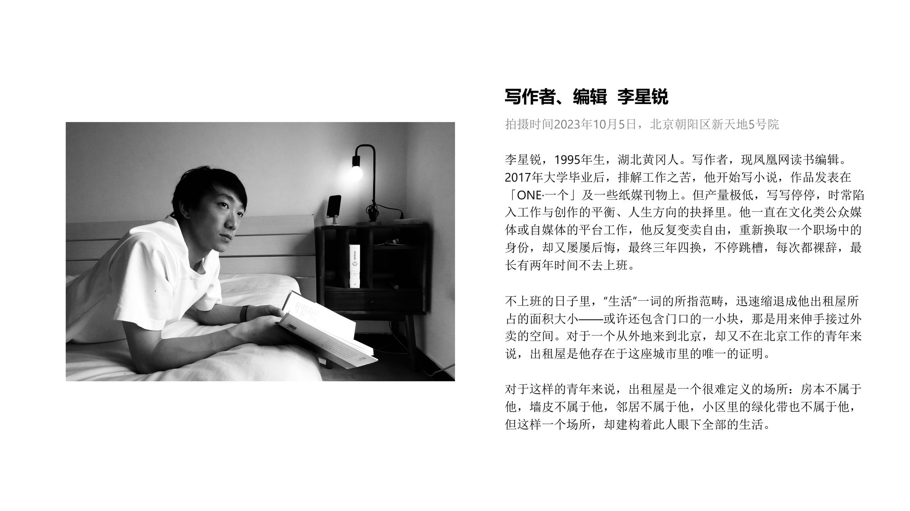
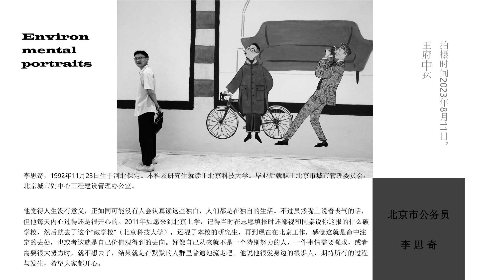
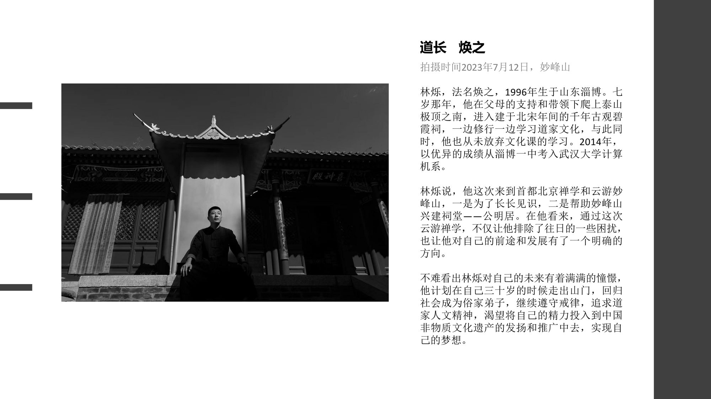
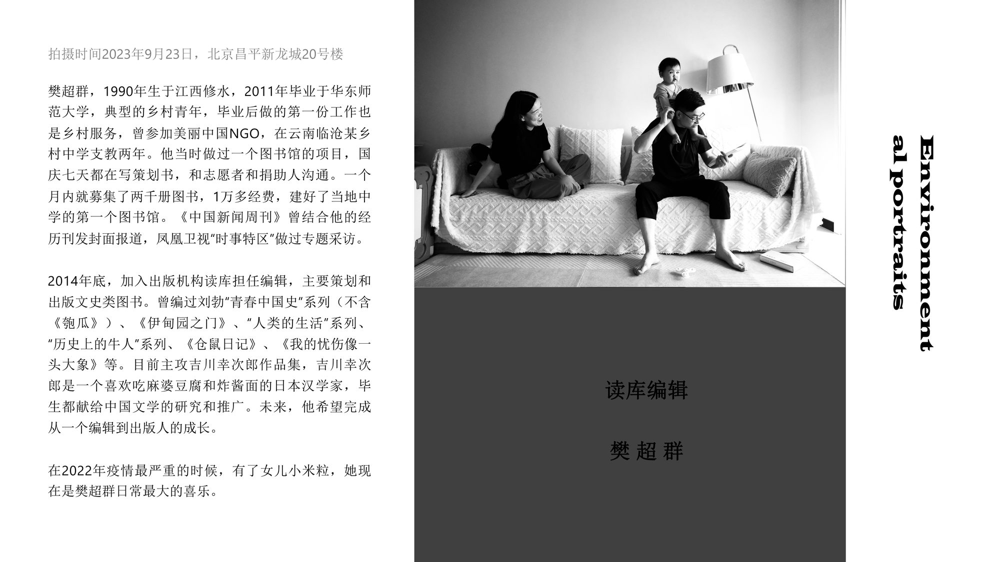
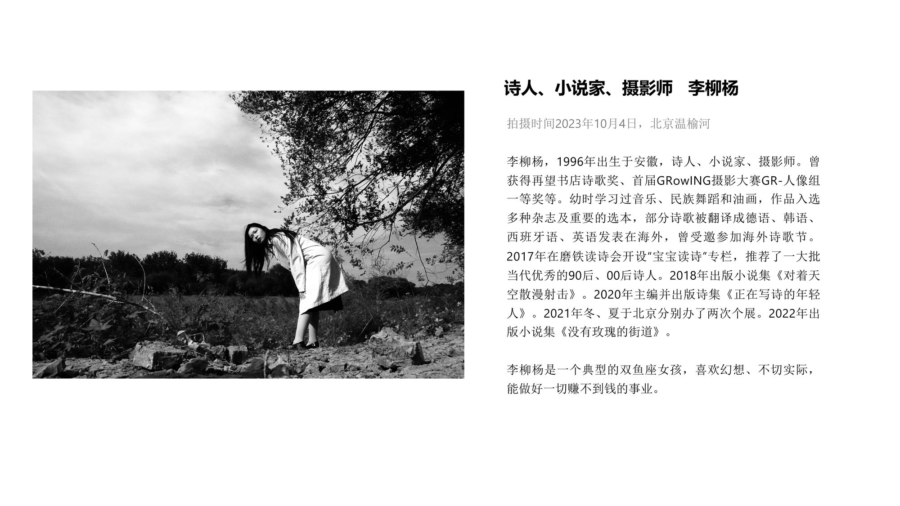

北京，繁华与落寞、古典与现代。2011 年来到这里，曾在人群中感到卡夫卡式的异化与疏离， 仿佛陷入尼采的「永恒轮回」。对抗虚无的方式，是将理想拆解成具体的目标。
用文字加环境肖像，记录 100 位 80、90 后朋友的故事。 他们在生活的重负、婚姻的琐碎、内心的挣扎中真实地活着。
相机成了沟通的媒介——图像直观，但信息有限，故以文字与肖像并置。 记录他们，也是探索自己。这是我在北京的生存痕迹，也是一代人的精神肖像。
「景物不变，只有人能体现时代气质。」 —— 黑明




